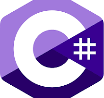

Compétences
-
Maîtrise avancée de Java, un langage de programmation orienté objet, j'ai aussi utiliser l'outil de developpement d'IHM JavaFX.
-

Ressources basiques en Python, ma dernière utilisation remonte au lycée mais mes connaissances en programmation orientée objet me permettent d'en faire usage.
-

Expérience pratique avec SQL, je l'ai utilisé pour la gestion de bases de données relationnelles, j'ai également utiliser JDBC pour le requêtage en java.
-

Maîtrise d'HTML, je l'ai utilisé pour le développement de site web statique avec une décoration CSS.
-

Compétence en C#, un langage de programmation que j'ai utilisé pour programmer sur le moteur de jeu 3D Unity dans le cadre de mes projets personnels.